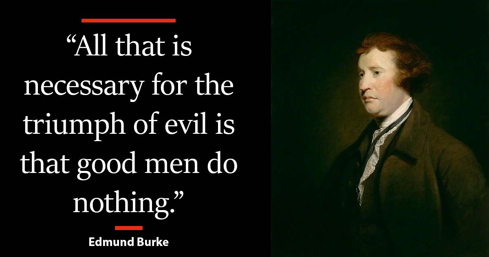

In 2016 during a work break, I was having a conversation with a coworker at a large tech company in the Bay Area. He asked me about my politics.
In 2016 during a work break, I was having a conversation with a coworker at a large tech company in the Bay Area. He asked me about my politics.
“I’m a progressive,” I said.
He didn’t react angrily or dismissively. He simply replied, “I don’t think you’re a progressive — and you probably don’t want to be associated with that.”
I was confused. Progressives, as I understood them, cared about equality, about the country, about other people. Republicans, by contrast, seemed naive at best. People misled into supporting policies that worked against their own interests.
My coworker began asking me about specific beliefs I held, and for each one he explained why they no longer aligned with what progressivism had become. This unsettled me. I had been raised in a political household. My father participated in the local Democratic Party. He despised Reagan and both Bushes. I voted straight Democrat in every election I could.
Some time later, I made a derogatory comment about Donald Trump during a break. I was alarmed that someone like him could command so much support. “Is the country really this racist and bigoted?” I wondered.
Again, my coworker challenged me by asking for a specific example. I repeated what I had read in the news. He said simply, “That’s not true.”
This coworker had previously worked on the Bernie Sanders campaign. I couldn’t understand how someone could go from Bernie to Trump. I still don’t know the full story.
Later that day, he sent me the full video clip I had referenced. Watching it in context, I realized that what Trump said — while crude — was not what the news claimed. That moment changed my habits permanently. I began fact-checking everything and reading across political lines.
What I discovered was not that one side told the truth and the other lied. It was that major media organizations routinely distorted trivial details, selectively framed events, and trained audiences to react emotionally rather than analytically. Two people could follow the same story and believe they both understood the issue, while holding incompatible premises — able to talk past each other, but not understand one another.
I had seen this before. I grew up in, and later left, a religious cult. This was the same dynamic: not total falsehoods, but curated narratives that prepared adherents to dismiss dissent reflexively.
For about a year, I read obsessively. It was exhausting. Truth was difficult to determine without primary sources. The left was clearly misrepresenting Trump frequently. Now, that doesn’t mean Republicans were honest either. They are political actors.
When the left wasn’t misrepresenting events, it often fixated on trivialities. Who cares if the President eats two scoops of ice cream, while everyone else only gets one? Why not critique policy? I thought Progressives clearly had the edge. If political discourse had degraded this badly, then Trump was dangerous — but to whom, and why?
I also began reading the Democratic Party’s actual policy positions. It became clear that it was no longer the party of my father. Cultural issues had been added that I believed government had no business having an opinion on. This alone wasn’t a deal-breaker. I still believed — and largely still do — in a social safety net. My values have not changed.
From my involvement in the cypherpunk movement, I was already aware of the surveillance state and unconstitutional government behavior. What surprised me was how many scandals were simply ignored or suppressed by mainstream media and major platforms. Democrats were clearly engaged in misconduct — though Republicans were as well.
Power must be watched closely, or it will be abused. When information channels themselves are compromised, that becomes impossible.
I’m aware of Trump’s personal corruption, his rhetoric, and his moral failures. I’m also aware of the Clinton Foundation, pay-to-play politics, and ongoing foreign entanglements. I wish none of this were true. These are not my primary concerns.
My concern is structural.
Left-wing activists now exert de facto control over most major media organizations, academia, and large technology platforms. There are enough ideologically aligned actors within these institutions that they operate with near-total autonomy, regardless of boards or executives.
I rely only on what I can see and hear directly. And what I have repeatedly seen is censorship and misrepresentation presented as morally necessary — particularly when accountability would threaten power. I do not believe most Democrats are aware of this. How could they be?
Republicans do not exert comparable control over the information environment. Right-leaning individuals are routinely exposed to left-wing narratives; the reverse is increasingly untrue. Yes, right-wing propaganda exists. But left-wing information remains readily accessible to anyone who chooses to engage it, while institutional alignment on the right is far weaker and less cohesive.
The Twitter Files confirmed what I already suspected, though the scale still shocked me. Twitter was not unique. The full extent remains unknown.
Everyone must vote their conscience. But I oppose censorship. I oppose war. I want fiscal restraint and sound money. I want controlled immigration and foreign aid focused on helping countries stabilize internally. These are major issues, and yet they are rarely addressed meaningfully.
What I see coming from the left is increasingly alarming. Individually, many actions are forgivable. Taken together, they are not. I have serious concerns about the right as well, but I see fewer intentional constitutional violations — and far more exaggeration from left-wing activists.
As best I can tell, left-wing activism now poses the greater threat to institutional stability. Through government and aligned institutions, it has produced:
Coordination between the Democratic Party, media, and tech platforms to suppress lawful speech and important news
Continued efforts to restrict Second Amendment rights
Politicized prosecutions violating due process and equal protection
Abuse of digital surveillance authorities
Active promotion of race- and sex-based discrimination as a moral necessity
Institutional capture and retaliation against dissent
Manipulative language to sanitize policies that cannot withstand scrutiny
Failure to enforce borders or vet mass migration
Policies that weaken election integrity
Selective non-prosecution by ideological district attorneys
Political violence rationalized through moral labeling
Failure to investigate and prosecute organized political groups that engage in coordinated violence, intimidation, or unlawful activity
Judicial activism with little accountability
I do not see this stopping on its own. These are not policy disagreements — they are disagreements about how power should be exercised, and what limits should exist at all.
The most committed activists will remain influential regardless of electoral outcomes. Republicans may slow this trajectory, but I doubt they have the will to reverse it. I worry both about permanence and reversibility — and about what happens when power changes hands again.
On our present trajectory, pressure may build to invoke emergency powers in response to left-wing activist activity. History shows that such powers, once granted during moments of political instability, are rarely surrendered voluntarily and are often justified by appeals to moral necessity or crisis. Revolutionary movements do not need to overthrow the state to reshape it. By rejecting constitutional legitimacy and relying on coercion, they drive the expansion of emergency authority in ways that fundamentally alter how power is exercised. Neither outcome is acceptable to me.
How do you resolve this when so many citizens do not realize what they are not being shown?
I believe citizen action is now required. Government power is constrained in ways civic action is not. Civilians becoming actively and peacefully involved removes the pretext for invoking emergency powers and undercuts the appeal of revolutionary activism itself. Street violence and performative outrage accomplish nothing.
I see endless commentary and little disciplined action. If you are interested in lawful, constructive responses — legal, civic, or organizational — I want to engage with you.
I am a former Navy officer. I swore an oath to defend the Constitution against all enemies, foreign and domestic. I believe that oath still matters. My concern is not partisan, but constitutional.
If this diagnosis is even partly correct, neutrality is no longer defensible. Constitutional systems fail gradually — when citizens assume enforcement is someone else’s responsibility.
This is not a call for disorder. It is a warning. If citizens do not insist, peacefully and persistently, on free speech, due process, and equal application of the law, those protections will continue to erode.
Where laws are violated, they must be enforced without ideological exemption. The alternative is selective enforcement — which always ends in repression.
The choice is not between calm and chaos. It is between disciplined civic action now, or harsher measures later.
If any of this resonates, passive consumption is no longer enough. Serious problems require sustained, unglamorous work:
Support constitutional litigation
Back transparency and independent journalism
Engage locally in oversight and governance
Strengthen civil liberties organizations that apply principles consistently
Demand equal enforcement of existing laws against political violence, intimidation, and coordinated unlawful activity, regardless of ideological justification
None of this is exciting. All of it works. Waiting for elections alone has not been enough.
